Lab 2: Decoders and Encoders
Aegeus handed the other sail, a white one, to the helmsman, and gave him special instructions that on the return voyage, if Theseus came back safe and sound, he should hoist the white sail; but if things had gone ill, the ship was to carry the black sail, as a signal of misfortune.
—Lives of the Noble Grecians and Romans, Plutarch
Decoders and encoders are commonly used circuits in digital systems and are also one of the main components of combinational logic circuits. This lab first introduces the design methods of commonly used decoders and encoders and the use of seven-segment displays. This lab will also introduce the use of for loops in the Verilog language. Finally, readers are asked to design an 8-3 priority encoder and seven-segment display on their own.
Decoders
Decoders are also important components of combinational logic circuits. A decoder is a logic circuit that converts a certain input information into a specific output. It is usually a multi-input/output circuit that converts \(n\)-bit input codes into \(m\)-bit output codes. Generally, \(n<m\), and there is a one-to-one mapping relationship between the input encoding and the output encoding. Each input encoding produces a unique output encoding that is different from the others.
A commonly used binary decoder (shown in the figure below) is a logic circuit with \(n\) inputs and \(m=2^n\) outputs. The decoder has an enable signal En. When En=0, regardless of the input, the decoder does not output any valid values; when En=1, the input value determines the value of the output signal. In binary coding, the most commonly used output encoding is a 1-bit encoding out of \(m=2^n\) bits, meaning that at any given time, only one bit out of the \(m\)-bit output encoding is active, while the remaining bits are 0. This type of binary encoding is called one-hot encoding, which means that the bit set to 1 appears to be “hot,” and the signal output by the binary decoder is one-hot encoded.
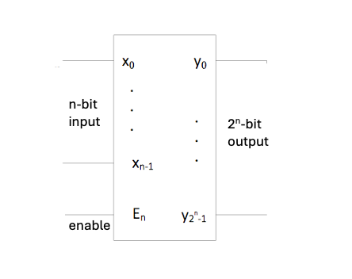
Fig. 8 \(n\)-bit input, \(2^n\)-bit output decoder
This lab first introduces the working principles of 2-4 decoders and 3-8 decoders, and teaches the design of decoders.
2-4 Decoder
2-4 decoder (shown in the figure below), whose input signals are \(x_0\) and \(x_1\). It decodes each binary input signal \(x_0\) and \(x_1\), and the decoded output selects one of \(y_0\), \(y_1\), \(y_2\), and \(y_3\). The decoder output can be designed to be high level effective or low level effective. In this example, high level effective is used.
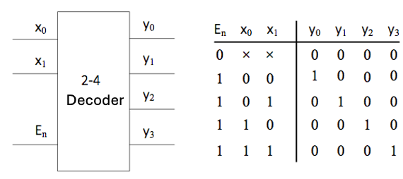
Fig. 9 2-4 Decoder
The logic circuit diagram of the decoder is shown below.
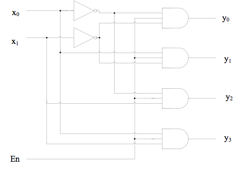
Fig. 10 2-4 Decoder logic circuit
Hardware description language can be used to implement the 2-4 decoder circuit. The following is the code for a 2-4 decoder with an enable port:
module decode24(x,en,y);
input [1:0] x;
input en;
output reg [3:0]y;
always @(x or en)
if (en)
begin
case (x)
2'd0 : y = 4'b0001;
2'd1 : y = 4'b0010;
2'd2 : y = 4'b0100;
2'd3 : y = 4'b1000;
endcase
end
else y = 4'b0000;
endmodule
The program uses a numeric string (literal) n'Bdd...d, where n is the number of digits in the string, represented in decimal. Here, the number of digits in the string is the number of bits used to store the value dd...d in the machine (binary), not the number of digits represented in B base. B is a single letter specifying the base, which can be b (binary), o (octal), d (decimal, optional), or h (hexadecimal). dd...d is the numerical string, represented in base B.
After entering the designed program code, enter the stimulation code to simulate the design.
int main() {
sim_init();
top->en = 0b0; top->x = 0b00; step_and_dump_wave();
top->x = 0b01; step_and_dump_wave();
top->x = 0b10; step_and_dump_wave();
top->x = 0b11; step_and_dump_wave();
top->en = 0b1; top->x = 0b00; step_and_dump_wave();
top->x = 0b01; step_and_dump_wave();
top->x = 0b10; step_and_dump_wave();
top->x = 0b11; step_and_dump_wave();
sim_exit();
}
Perform functional simulation on the designed circuit, as shown in the figure below. Analyze the timing diagram and find that the results are consistent with the truth table.
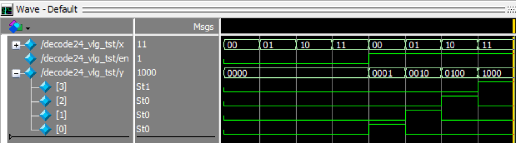
Fig. 11 2-4 Decoder simulation results
for loop statement
We can also use a for loop statement to implement a 3-8 decoder.
module decode38(x,en,y);
input [2:0] x;
input en;
output reg [7:0]y;
integer i;
always @(x or en)
if (en) begin
for( i = 0; i <= 7; i = i+1)
if(x == i)
y[i] = 1;
else
y[i] = 0;
end
else
y = 8'b00000000;
endmodule
This code contains multiple if-else statements. Please pay attention to the pairing of if and else.
Additionally, the code uses a for loop statement. The for loop statement is also one of the commonly used statements in Verilog HDL. A for loop statement repeats the process of executing an assignment statement a specified number of times. Its format is:
for ( initial_assignment; condition; step_assignment )
initial_assignment specifies the initial value of the loop variable. The condition expression specifies the conditions under which the loop must end; as long as the condition is true, the statements in the loop are executed. step_assignment specifies the assignment to be modified, which is usually to increase or decrease the loop variable count.
for loop condition expression
In Verilog HDL code, the condition expression of a for loop must be a constant and cannot be a variable.
Encoders
An encoder is a logic circuit that performs the opposite function of a decoder. The output code of an encoder has fewer bits than its input code.
Commonly used binary encoders convert information of \(2^n\) bits into \(n\)-bit binary codes, as shown in the figure below. In a binary encoder, only one bit of the \(2^n\)-bit signal can be 1, while the rest are 0 (i.e., one-hot encoding). The output of the encoder is a binary number that indicates which bit input is 1.
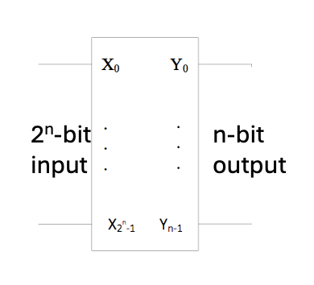
Fig. 12 \(2^n\)-bit input, \(n\)-bit output encoder
4-2 Encoder
The 4-2 encoder is a 4-bit input, 2-bit output encoder (as shown below). Its input signals are \(x_0\), \(x_1\), \(x_2\), and \(x_3\), and its outputs are \(y_0\) and \(y_1\). In this example, one-hot encoding is used, with only one bit set to 1 for each input. If two or more bits are set to 1, the output is set to a high-impedance state.
\(x_3\) |
\(x_2\) |
\(x_1\) |
\(x_0\) |
\(y_1\) |
\(y_0\) |
|---|---|---|---|---|---|
0 |
0 |
0 |
1 |
0 |
0 |
0 |
0 |
1 |
0 |
0 |
1 |
0 |
1 |
0 |
0 |
1 |
0 |
1 |
0 |
0 |
0 |
1 |
1 |
The code of the 4-2 encoder is as follows:
module encode42(x,en,y);
input [3:0] x;
input en;
output reg [1:0]y;
always @(x or en) begin
if (en) begin
case (x)
4'b0001 : y = 2'b00;
4'b0010 : y = 2'b01;
4'b0100 : y = 2'b10;
4'b1000 : y = 2'b11;
default: y = 2'b00;
endcase
end
else y = 2'b00;
end
endmodule
The following is the test code for the 4-2 encoder.
int main() {
sim_init();
top->en=0b0; top->x =0b0000; step_and_dump_wave();
top->x =0b0001; step_and_dump_wave();
top->x =0b0010; step_and_dump_wave();
top->x =0b0100; step_and_dump_wave();
top->x =0b1000; step_and_dump_wave();
top->en=0b1; top->x =0b0000; step_and_dump_wave();
top->x =0b0001; step_and_dump_wave();
top->x =0b0010; step_and_dump_wave();
top->x =0b0100; step_and_dump_wave();
top->x =0b1000; step_and_dump_wave();
sim_exit();
}
The simulation results are shown in the figure below:
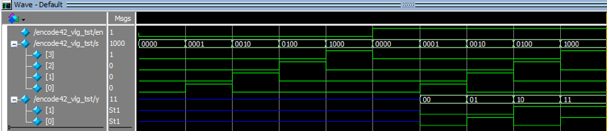
Fig. 13 4-2 Encoder simulation results
Priority encoder
The priority encoder allows multiple input bits to be high at the same time, i.e., more than one “1” in inputs. The encoder encodes only the bit with the highest priority among the input bits at the same time, according to the priority order of the input signals.
We can use a for loop statement to easily implement a priority encoder. An example of a 4-2 priority encoder is shown below.
module encode42(x,en,y);
input [3:0] x;
input en;
output reg [1:0]y;
integer i;
always @(x or en) begin
if (en) begin
y = 0;
for( i = 0; i <= 3; i = i+1)
if(x[i] == 1) y = i[1:0];
end
else y = 0;
end
endmodule
Please write a test code for the above code, simulate it, and check the simulation results.
Seven-segment display
The seven-segment LED display is a commonly used display component, often used in watches, calculators, and other instruments to display numerical values. The figure below shows the circuit diagram of the display. There are two types of displays: common cathode and common anode. Common cathode connects the cathodes of seven LEDs together and connects them to a low level. This way, when the other end of any LED is connected to a high level, it will light up. A common anode connects the anodes of seven LEDs together, allowing them to be connected to a high level. In this way, if the other end of any LED is given a low level, it will light up.
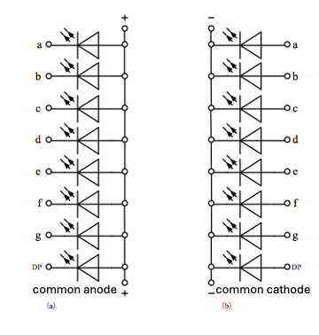
Fig. 14 Circuit diagram of seven-segment display
The seven-segment display on the DE10-Standard development board is a common anode type. One end of each seven-segment LED is connected to a common anode, and the other end is connected to a pin on the Cyclone V SoC FPGA on the development board, as shown in the figure below. If a logic 0 is output from this pin, this segment of the seven-segment display is lit.
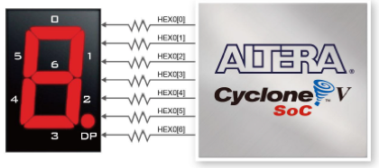
Fig. 15 DE10-Standard seven-segment display connection
The DE10-Standard development board has six seven-segment displays, and the connections between each display and the FPGA pins are shown in the figure below.
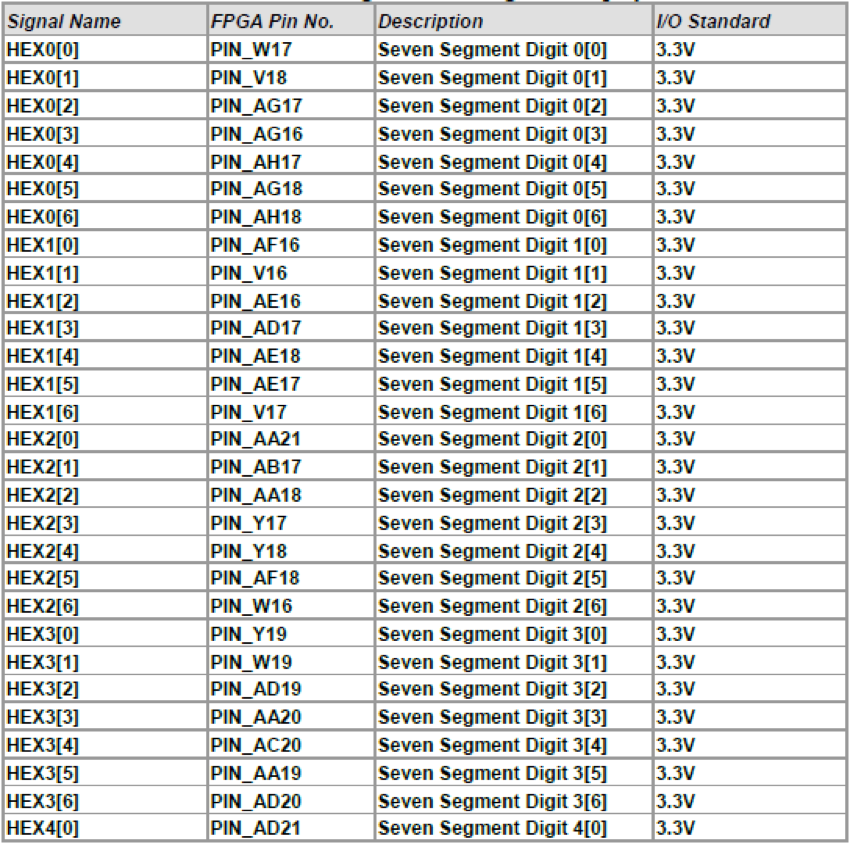
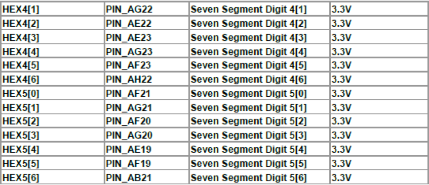
Fig. 16 DE10-Standard seven-segment display pin
The display modes for the digits 1 to 9 and hexadecimal a to f on a seven-segment display are shown in the figure below.
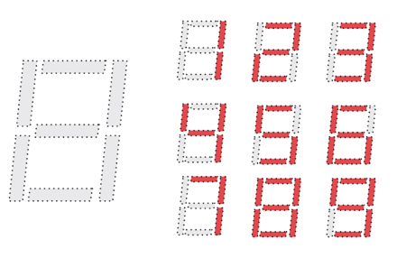 |
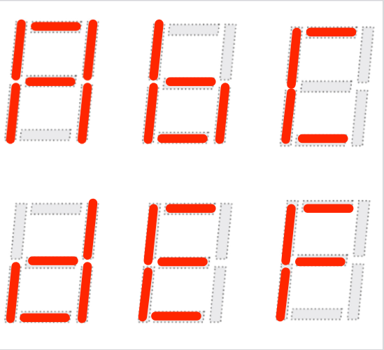 |
Take HEX0 as an example. If you want to display the number “1” on this seven-segment display, you only need to output logic ‘0’ at the FPGA pins PIN_V18 and PIN_AG17 connected to the two LED segments HEX0[1] and HEX0[2], and output “1” at the other pins.
Please design the corresponding encoding for the seven-segment display yourself.
Module instantiation
In the process of designing digital systems, we often need to divide a large system into multiple smaller submodules. This approach simplifies complex systems by breaking them down into layers, allowing each small module to be designed, coded, and debugged separately. It also enables small modules to be used as reusable units in different projects.
The seven-segment display in this lab is a typical reusable module. In subsequent labs, if you need to use the display to show debugging data, you can directly instantiate the module written in this lab. The input and output interfaces of the seven-segment display module bcd7seg are shown below. The input is a four-digit BCD code b, and the output is the decoding result h of the seven-segment display.
module bcd7seg(
input [3:0] b,
output reg [6:0] h
);
// detailed implementation ...
endmodule
When using this module, we can perform instantiation on the module.
For example, when we need to encode and output six seven-segment displays HEX0~HEX5, we can instantiate six bcd7seg modules as shown below.
//output debuginfo to bcd
bcd7seg seg5(cpudbgdata[23:20],HEX5);
bcd7seg seg4(cpudbgdata[19:16],HEX4);
bcd7seg seg3(cpudbgdata[15:12],HEX3);
bcd7seg seg2(cpudbgdata[11:8],HEX2);
bcd7seg seg1(cpudbgdata[7:4],HEX1);
bcd7seg seg0(cpudbgdata[3:0],HEX0);
Module instantiation in Verilog
Verilog’s module instantiation is fundamentally different from high-level language function calls. Instantiation is more like taking a chip out of a chip library, giving it a name (instance name), and then connecting the input and output pins. Therefore, module instantiation, like the assign statement, can only be performed outside the always statement block.
Lab check-in contents
On-Board Lab: Implement an 8-3 priority encoder and display it on a seven-segment display.
Function description
Find the principles and implementation methods related to 8-3 priority encoders, implement an 8-3 encoder, and complete the design, functional simulation, and hardware implementation of the 8-3 encoder.
Input an 8-bit binary number, encode it into a 3-bit binary value with the most significant bit first, and add an input indicator bit depending on whether there is an input, i.e., when all 8 inputs are 0, the indicator bit is 0, and when any input is 1, the indicator bit is 1. The enable terminal of the encoder can be implemented optionally. Display the encoding result and indicator bit in binary form on four light-emitting diodes (LEDs). Then decode this result according to the seven-segment display and display the binary priority encoding result in decimal form on the display.
Input/output recommendations
Inputs can be selected using toggle switches SW7-SW0. The enable pin can be selected using SW8. Outputs are LED2-0, with output indication provided by LED4, and the seven-segment display output is HEX0.
Example: We input 00001110 from SW7 to SW0. Since we designed a high-order priority encoder, starting from the left (high order), the first bit with a value of 1 is bit 3. Therefore, the binary result of the priority encoder is 011. This value is displayed on the light-emitting diode, and the indicator bit is also set to 1. Then decode this value according to the display of the seven-segment display. At this point, it should display “3” in HEX0, so HEX0[6:0] should be decoded as 0110000 (note the high-low bit order), and then the character “3” will be displayed on the seven-segment display.
casex and casez statements
Refer to relevant materials to understand the use of casex and casez statements, and consider how to use casex statements to complete the design of a priority encoder.
Online test
Online test the priority encoder and the seven-segment display code
Online test
Gray code